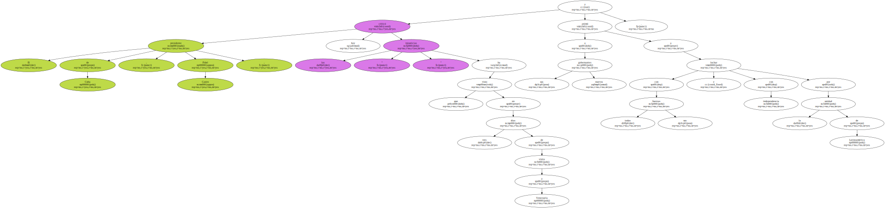
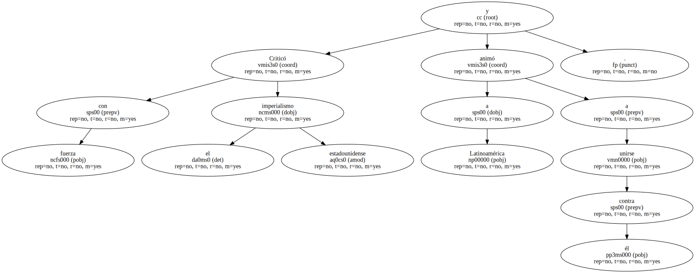
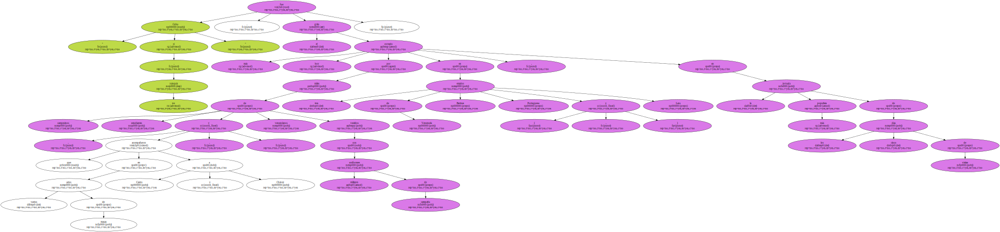
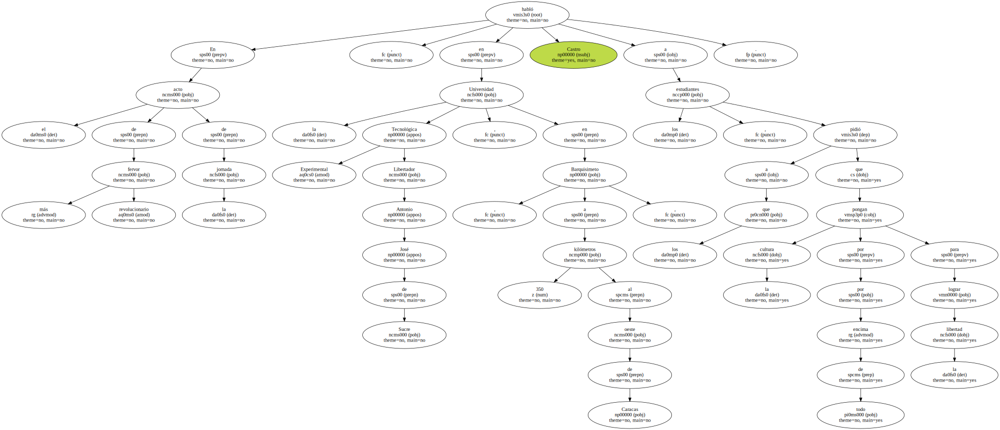
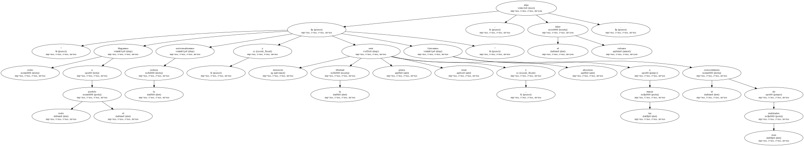
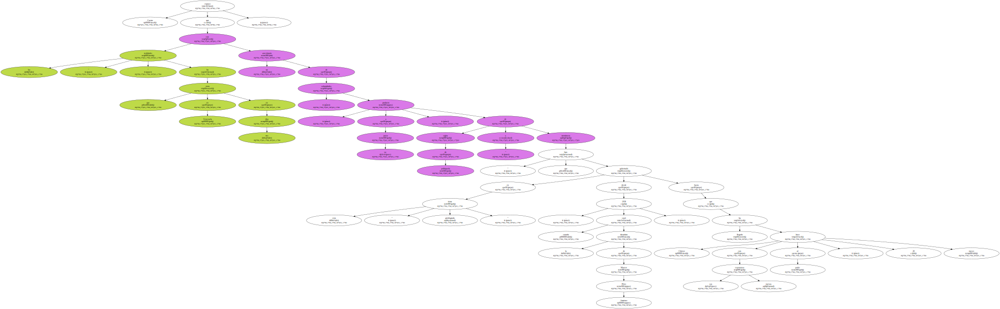
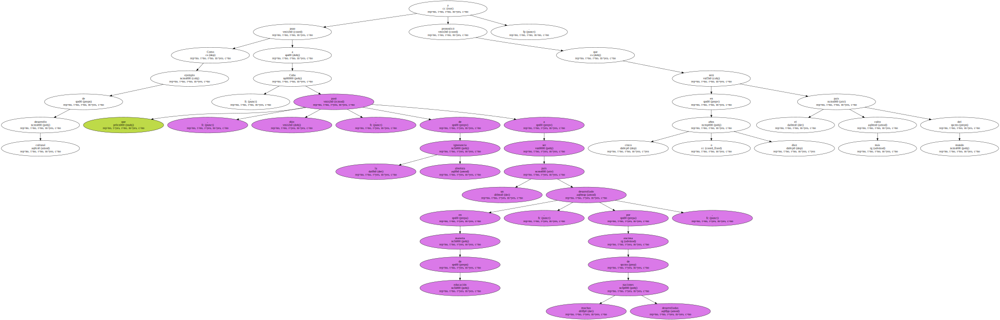

El presidente de Cuba , Fidel Castro , criticó hoy las " injusticias " que ha visto en tres días de visita a Venezuela y animó a sus nuevos gobernantes a luchar con todas sus fuerzas y con independencia por la unidad de Latinoamérica.
Castro dedicó su tercera jornada en Venezuela a encuentros de masas con campesinos y estudiantes en un recorrido por el interior del país acompañado por su inseparable anfitrión , el presidente venezolano , Hugo Chávez.

Criticó con fuerza el imperialismo estadounidense y animó a Latinoamérica a unirse contra él.
" Cuba sí , yanquis no " , fue el grito más coreado hoy por miles de campesinos , estudiantes y venezolanos que acompañaron en varios actos de masas a Castro y Chávez , vestidos con uniformes militares de campaña , en tres estados de Venezuela ( Barinas , Portuguesa y Lara ) , en la jornada más populista de los cinco días de visitas.
En el acto de más fervor revolucionario de la jornada , en la Universidad Tecnológica Experimental Libertador Antonio José de Sucre , en Barquisimeto , a 350 kilómetros al oeste de Caracas , Castro habló a los estudiantes , a los que pidió que pongan la cultura por por encima de todo para lograr la libertad.
" Hagamos culto a todo el pueblo , universalicemos la cultura y entonces la libertad será plena , total y absoluta . Llevemos a las masas el conocimiento de esas realidades " , dijo el líder cubano.
Castro expuso que las " realidades " que ha visto en Venezuela en tres días son un anecdotario de calamidades , producto , a su juicio , de " siglos de politiquería y mentirosos " que han gobernado en esta " tierra privilegiada " desde 1958 , cuando cayó la dictadura de Marcos Pérez Jiménez , hasta que Chávez ha llegado con sus nuevas esperanzas al poder , hace 20 meses.
Frente a este panorama desolador , manifestó que sólo la cultura y el trabajo pueden hacer libre a los venezolanos , consejo que fue atentamente escuchado por Chávez , al que acompañaba su esposa Marisabel Rodríguez , vestida con un vistoso atuendo deportivo con los colores de la bandera venezolana.
Como ejemplo de desarrollo cultural puso a Cuba , que , dijo , pasó de la ignorancia absoluta a ser un país desarrollado en materia de educación , por encima de muchas naciones desarrolladas , y pronosticó que en cinco o diez años será el país más culto del mundo.
